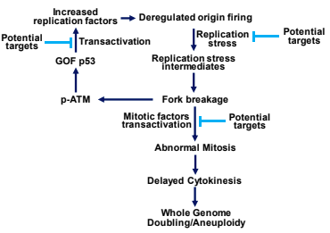

Dr. Swati Palit Deb
Dr Deb's research area.
My primary research interest is to reveal targetable susceptibilities of proliferating cancer cells during oncogenesis. Despite modern treatment and prevention approaches, the American Cancer Society lists death due to lung cancer to be most frequent, suggesting extremely poor efficacy of current lung cancer treatment. At present, my laboratory is investigating the “Achilles heel” of cancer cells, targeting at which would destroy cancer cells overcoming their apparently robust ability to grow. Following are our ongoing lines of investigation
Project 1
Oncogenic p53 mutations, termed as Gain of Function (GOF) mutations of tumor suppressor p53, is very frequent (up to 70-95%) in all types of human lung cancers, which show accelerated growth, metastasis, invasiveness, and resistance to chemotherapeutic drugs. The mutant p53 proteins have abnormally long half-life. Our published studies have demonstrated that tumors with GOF p53 develop dependency on the GOF p53 mutants for their maintenance and progression. Accordingly, elimination or depletion of endogenous GOF p53 mutants drastically reduces the tumorigenic phenotype of many human lung cancer cell lines.
In a published study highlighted by the Journal of Clinical Investigation (3) we demonstrated that GOF p53 activates expression of factors required for DNA replication origin firing and intra-S-phase checkpoint signaling. We also established that the GOF p53-dependency of tumor growth lies on the ability of GOF p53 to initiate and foster inappropriate DNA replication forks and thus accelerates error-prone genome duplication and cell proliferation. Our unpublished studies show that increase in the frequency of replication forks by GOF p53 generates replication stress, and infrequent DNA strand breakage. Although infrequent, GOF p53-induced fork breakage activates ATM/Chk2 signaling re-enforcing stability of GOF p53 and thus establishing a feedback loop. Fork breakage also increases frequency of multipolar mitotic spindle and error prone genome segregation leading to cytokinetic delay and whole genome doubling reported to confer selective advantage to cancer cells.
Our observation identifies the mechanism of GOF p53 dependency that can now be therapeutically targeted at multiple levels as shown in the scheme above. Targeting GOF p53 dependency should also preferentially eliminate proliferating cancer cells in lung, where normal cells do not proliferate. We are in the process of testing this hypothesis.
Project 2
Amplification and overexpression of the human homologue of mouse double minute 2 (mdm2) gene is frequent in many cancers particularly in lung cancer. Although interaction of MDM2 protein with the tumor suppressor p53 is thought to induce proliferation of cancer cells, overexpression of MDM2 has often been detected in lung cancer cells with wild-type or mutated p53. However, the consequence of MDM2 overexpression in normal adult lung has not been investigated. We have generated inducible mouse models targeting human MDM2 expression in bronchiolar or alveolar cells of lung. We recently reported a p53-independent cell proliferative effect of MDM2 specifically in lung progenitor cells only after lung injury. Our study found that MDM2 is indispensable for DNA replication in progenitor cells and their epithelial mesenchymal transition during epithelial repair after lung injury while its overexpression robustly accelerates these activities.
Since our study detected a cooperation between lung injury and oncoprotein MDM2 in progenitor cell proliferation, we plan to investigate whether MDM2 overexpression may deregulate progenitor cell proliferation causing fibrosis, tumor formation and/or other defects in epithelial repair and whether p53-independent DNA replication function of MDM2 can be controlled to prevent these defects